<title>Kit de lancement Archfield</title>
<meta name="claude:viewport-fit-sides" content="cover">
<link rel="stylesheet" href="https://fonts.googleapis.com/css2?family=Geist:wght@400;500;600&family=Source+Serif+4:opsz,wght@8..60,400;8..60,500&display=swap">
<style>
/* Mise en page : guide pratique d'une colonne. Étapes numérotées (l'ordre compte), textes prêts à copier dans des blocs
   avec bouton, visuels en grille, calendrier en tableau. Identité Archfield : bleu encre, orange, papier, serif + Geist. */
:root {
  --paper: #F4F2EE; --surface: #FFFFFF; --ink: #14263D; --text: #2C333C; --muted: #5D6570; --line: #E1DCD2;
  --navy: #14263D; --navy-text: #C9D2DD; --accent: #C2410C; --accent-soft: #FBEAE2; --ok: #26774B; --ok-soft: #E2F1E7; --warn-soft: #FCF1DB; --warn: #7A4E06; --code: #F7F5F0;
  --f-display: "Source Serif 4", Georgia, serif; --f-body: "Geist", "Segoe UI", system-ui, sans-serif;
}
@media (prefers-color-scheme: dark) { :root:not([data-theme="light"]) {
  --paper: #0E1217; --surface: #161B22; --ink: #ECE9E3; --text: #D4D1CB; --muted: #9AA3AE; --line: #2A3039;
  --navy: #0B1624; --navy-text: #C9D2DD; --accent: #EA6A32; --accent-soft: #3A1E10; --ok: #6FCB98; --ok-soft: #12301F; --warn-soft: #35270D; --warn: #F0C46E; --code: #1B2129; color-scheme: dark; } }
:root[data-theme="dark"] {
  --paper: #0E1217; --surface: #161B22; --ink: #ECE9E3; --text: #D4D1CB; --muted: #9AA3AE; --line: #2A3039;
  --navy: #0B1624; --navy-text: #C9D2DD; --accent: #EA6A32; --accent-soft: #3A1E10; --ok: #6FCB98; --ok-soft: #12301F; --warn-soft: #35270D; --warn: #F0C46E; --code: #1B2129; color-scheme: dark; }
body { background: var(--paper); color: var(--text); font: 16px/1.62 var(--f-body); -webkit-font-smoothing: antialiased; }
.wrap { max-width: 940px; margin: 0 auto; padding-left: max(18px, env(safe-area-inset-left, 0px)); padding-right: max(18px, env(safe-area-inset-right, 0px)); }
h1, h2, h3 { color: var(--ink); margin: 0; text-wrap: balance; }
h2 { font: 400 clamp(1.7rem, 1.35rem + 1.2vw, 2.25rem)/1.12 var(--f-display); letter-spacing: -.012em; }
h3 { font-size: 1.05rem; font-weight: 600; margin-top: 8px; }
p { margin: 0; max-width: 70ch; }
a { color: var(--accent); text-underline-offset: 3px; }
b, strong { color: var(--ink); font-weight: 600; }
.label { font-size: .74rem; font-weight: 600; letter-spacing: .13em; text-transform: uppercase; color: var(--accent); }
.muted { color: var(--muted); }
ul.plain, ol.plain { margin: 0; padding-left: 1.2em; display: grid; gap: 7px; max-width: 70ch; }

header.cover { background: var(--navy); color: var(--navy-text); }
header.cover .wrap { padding-block: clamp(40px, 6vw, 68px); display: grid; gap: 18px; }
header.cover .label { color: #F0A27A; }
header.cover h1 { font: 400 clamp(2.3rem, 1.6rem + 2.8vw, 3.6rem)/1.04 var(--f-display); color: #fff; letter-spacing: -.02em; }
header.cover p { font-size: 1.08rem; }
header.cover b { color: #fff; }
.meta { display: flex; flex-wrap: wrap; gap: 6px 24px; font-size: .86rem; color: #A9B4C2; }

nav.toc .wrap { padding-block: 26px; }
nav.toc ol { margin: 10px 0 0; padding-left: 1.5em; columns: 2 280px; column-gap: 40px; }
nav.toc li { padding: 3px 0; break-inside: avoid; }
nav.toc a { color: var(--ink); text-decoration: none; }
nav.toc a:hover { text-decoration: underline; }

section.part { border-top: 1px solid var(--line); scroll-margin-top: 10px; }
section.part > .wrap { padding-block: clamp(34px, 5vw, 54px); display: grid; gap: 18px; }
.num { font-family: var(--f-display); color: var(--accent); margin-right: .3em; }

.note { border-radius: 10px; padding: 14px 18px; font-size: .95rem; display: grid; gap: 4px; }
.note.warn { background: var(--warn-soft); color: var(--warn); }
.note.warn b { color: var(--warn); }
.note.ok { background: var(--ok-soft); color: var(--ok); }
.note.ok b { color: var(--ok); }

.steps { list-style: none; margin: 0; padding: 0; display: grid; gap: 12px; counter-reset: s; }
.steps > li { counter-increment: s; display: grid; grid-template-columns: 34px minmax(0, 1fr); gap: 4px 14px; }
.steps > li::before { content: counter(s); grid-row: span 2; width: 30px; height: 30px; border-radius: 50%; background: var(--ink); color: var(--paper); display: grid; place-items: center; font-size: .86rem; font-weight: 600; }
.steps > li > span { color: var(--muted); font-size: .94rem; }

.tbl { overflow-x: auto; border-top: 1px solid var(--ink); }
table { width: 100%; border-collapse: collapse; font-size: .93rem; }
th, td { text-align: left; vertical-align: top; padding: 10px 14px 10px 0; border-bottom: 1px solid var(--line); }
th { font-size: .72rem; font-weight: 600; letter-spacing: .1em; text-transform: uppercase; color: var(--muted); white-space: nowrap; }
td.w { color: var(--ink); font-weight: 500; min-width: 8em; }
td.d { min-width: 16em; }
.tag { display: inline-block; font-size: .72rem; font-weight: 600; padding: 2px 8px; border-radius: 4px; background: var(--accent-soft); color: var(--accent); white-space: nowrap; }

.copy { background: var(--surface); border: 1px solid var(--line); border-radius: 10px; overflow: hidden; }
.copy header { display: flex; justify-content: space-between; align-items: center; gap: 10px; padding: 9px 12px 9px 16px; border-bottom: 1px solid var(--line); background: var(--code); }
.copy header b { font-size: .88rem; }
.copy header small { color: var(--muted); font-size: .78rem; margin-left: 8px; font-weight: 400; }
.copy pre { margin: 0; padding: 14px 16px; white-space: pre-wrap; word-break: break-word; font: 400 .93rem/1.55 var(--f-body); color: var(--text); }
.copy button { border: 1px solid var(--line); background: var(--surface); color: var(--ink); border-radius: 8px; padding: 5px 12px; font: 600 .8rem var(--f-body); cursor: pointer; flex: none; }
.copy button:hover { border-color: var(--ink); }
.copy button:focus-visible { outline: 2px solid var(--accent); outline-offset: 2px; }
.copy button.done { background: var(--ok-soft); color: var(--ok); border-color: transparent; }
.grid2 { display: grid; grid-template-columns: repeat(2, minmax(0, 1fr)); gap: 14px; }
.grid2 > * { min-width: 0; }

.gallery { display: grid; grid-template-columns: repeat(auto-fill, minmax(190px, 1fr)); gap: 14px; }
.gallery figure { margin: 0; display: grid; gap: 6px; }
.gallery img { width: 100%; max-width: 100%; display: block; border-radius: 6px; border: 1px solid var(--line); background: var(--navy); }
.gallery figcaption { font-size: .8rem; color: var(--muted); line-height: 1.4; }
.gallery figcaption b { display: block; font-size: .84rem; }
.wide { grid-column: 1 / -1; }
.videos { display: grid; grid-template-columns: minmax(0, 1.8fr) minmax(0, 1fr); gap: 16px; align-items: start; }
.videos video { width: 100%; max-width: 100%; border-radius: 8px; background: #000; display: block; }

footer .wrap { border-top: 1px solid var(--line); padding-block: 24px 48px; font-size: .84rem; color: var(--muted); }
@media (max-width: 680px) { .grid2, .videos { grid-template-columns: minmax(0, 1fr); } }
@media (prefers-reduced-motion: reduce) { * { scroll-behavior: auto; } }
</style>

<header class="cover">
  <div class="wrap">
    <p class="label">Kit de lancement · avant l'ouverture du site</p>
    <h1>Faire connaître Archfield, dès maintenant</h1>
    <p>Tout pour ouvrir les comptes <b>Instagram, Facebook, TikTok et WhatsApp Business</b>, publier les premières semaines et constituer une liste de premiers utilisateurs, en attendant la mise en ligne.</p>
    <div class="meta"><span>Version du 6 novembre 2026</span><span>Pour Sidney et Jean-Baptiste</span><span>Cahier des charges : <a href="https://claude.ai/artifact/JFYYS3PtHe3TJKqW9fBnUc" style="color:#F0A27A">version 2.0</a></span></div>
  </div>
</header>

<nav class="toc" aria-label="Sommaire"><div class="wrap"><p class="label">Sommaire</p><ol>
  <li><a href="#avant">Avant d'ouvrir les comptes</a></li>
  <li><a href="#comptes">Les comptes, pas à pas</a></li>
  <li><a href="#messages">Ce qu'on dit, et comment</a></li>
  <li><a href="#visuels">Les visuels</a></li>
  <li><a href="#videos">Les vidéos</a></li>
  <li><a href="#calendrier">Les 4 premières semaines</a></li>
  <li><a href="#legendes">Légendes prêtes à copier</a></li>
  <li><a href="#tiktok">Vidéos à tourner soi-même</a></li>
  <li><a href="#reponses">Réponses aux messages</a></li>
  <li><a href="#premiers">Trouver les premiers utilisateurs</a></li>
  <li><a href="#pub">La publicité payante</a></li>
  <li><a href="#suivi">Suivre les résultats</a></li>
  <li><a href="#regles">Les règles à respecter</a></li>
</ol></div></nav>

<section class="part" id="avant"><div class="wrap">
  <h2><span class="num">1.</span>Avant d'ouvrir les comptes</h2>
  <div class="note warn"><b>D'abord, trancher le nom avec Jean-Baptiste.</b> Changer de nom après avoir des abonnés fait perdre l'identifiant, les liens et une partie du public. Si le nom reste en discussion, ouvrez seulement WhatsApp Business et attendez la décision pour les autres comptes.</div>
  <ol class="steps">
    <li><b>Réserver le même identifiant partout</b><span>Dans l'ordre de préférence : <b>@archfield</b>, <b>@archfield.app</b>, <b>@archfield_app</b>, <b>@archfieldbtp</b>. Vérifiez sur les 4 réseaux en même temps, par exemple sur <a href="https://instantusername.com" target="_blank" rel="noopener">instantusername.com</a>, puis prenez le premier libre partout.</span></li>
    <li><b>Créer une adresse e-mail dédiée</b><span>Par exemple <code>archfield.contact@gmail.com</code>. Tous les comptes y sont rattachés : pas votre e-mail personnel, pour pouvoir les partager à deux.</span></li>
    <li><b>Prendre un numéro pour WhatsApp Business</b><span>Une seconde carte SIM (Bénin ou France), ou un téléphone dédié. Ce numéro devient le contact public d'Archfield.</span></li>
    <li><b>Sécuriser</b><span>Un gestionnaire de mots de passe (Bitwarden, gratuit) et la double authentification sur chaque compte. Les deux associés ont accès.</span></li>
    <li><b>Préparer la liste d'attente</b><span>Le site n'est pas encore en ligne : créez un formulaire gratuit sur <a href="https://tally.so" target="_blank" rel="noopener">Tally</a> ou Google Forms (questions ci-dessous). C'est le lien de toutes les bios.</span></li>
    <li><b>Vérifier le nom de domaine</b><span><code>archfield.app</code>, <code>archfield.com</code> ou <code>archfield.bj</code>, chez un registraire (OVH, Gandi, Namecheap). Le réserver coûte quelques euros par an.</span></li>
  </ol>
  <div class="copy"><header><b>Questions du formulaire de liste d'attente</b><button type="button" data-copy>Copier</button></header><pre>Archfield arrive bientôt : inscrivez-vous pour être parmi les premiers chantiers suivis (deux mois offerts).

1. Prénom et nom
2. Numéro WhatsApp (avec l'indicatif, ex. +229…)
3. Vous êtes : je fais construire ou rénover / je dirige une entreprise du BTP / je suis chef de chantier / autre
4. Où vivez-vous ? (pays, ville)
5. Où se trouve votre chantier ? (pays, ville)
6. Votre chantier a-t-il déjà commencé ? oui / pas encore / je cherche une entreprise
7. Comment suivez-vous le chantier aujourd'hui ? (texte libre)
8. ☐ J'accepte qu'Archfield me contacte par WhatsApp ou e-mail au sujet de son lancement. Mes données ne sont ni vendues ni partagées, et je peux demander leur suppression à tout moment.</pre></div>
</div></section>

<section class="part" id="comptes"><div class="wrap">
  <h2><span class="num">2.</span>Les comptes, pas à pas</h2>
  <p>Ordre conseillé : WhatsApp Business d'abord (c'est là que les gens écrivent), puis Instagram et Facebook reliés ensemble, puis TikTok. Gérez Instagram, Facebook et WhatsApp au même endroit avec <b>Meta Business Suite</b> (gratuit, sur ordinateur et téléphone).</p>

  <h3>WhatsApp Business</h3>
  <ol class="steps">
    <li><b>Installer « WhatsApp Business »</b><span>L'application verte avec un B, gratuite, sur le téléphone dédié.</span></li>
    <li><b>Profil</b><span>Nom : Archfield · Catégorie : Services informatiques et électroniques (ou Construction) · Photo : <code>profil.png</code> · Description et e-mail ci-dessous.</span></li>
    <li><b>Outils professionnels</b><span>Activez le message d'accueil, le message d'absence et les réponses rapides (textes en partie 9). Créez une étiquette « Liste d'attente ».</span></li>
    <li><b>Lien direct</b><span>Le lien <code>https://wa.me/229XXXXXXXX?text=CHANTIER</code> (votre numéro, sans + ni 0 initial selon le pays) ouvre une conversation déjà remplie : mettez-le dans les bios et les publicités.</span></li>
  </ol>

  <h3>Instagram</h3>
  <ol class="steps">
    <li><b>Créer le compte</b><span>Avec l'e-mail dédié, l'identifiant réservé, la photo <code>profil.png</code>.</span></li>
    <li><b>Passer en compte professionnel</b><span>Paramètres › Type de compte et outils › Passer à un compte professionnel › <b>Entreprise</b>. Catégorie : « Logiciel » ou « Application ».</span></li>
    <li><b>Bio et lien</b><span>Texte ci-dessous ; lien : la liste d'attente (ou le lien WhatsApp).</span></li>
    <li><b>Publier la grille de départ</b><span>Les 9 posts, du n° 9 au n° 1 (le dernier publié apparaît en premier) : la grille se lit alors dans l'ordre. Ou suivez le calendrier, partie 6.</span></li>
    <li><b>Stories à la une</b><span>Créez 3 « À la une » : <i>C'est quoi ?</i> · <i>Comment ça marche</i> · <i>Questions</i>, avec les stories du kit.</span></li>
  </ol>

  <h3>Facebook</h3>
  <ol class="steps">
    <li><b>Créer une Page</b><span>Depuis votre profil personnel : Pages › Créer une page. Nom : Archfield · Catégorie : « Logiciel » · Bio : texte ci-dessous.</span></li>
    <li><b>Images</b><span>Photo : <code>profil.png</code> · Couverture : <code>couverture-facebook.png</code>.</span></li>
    <li><b>Bouton</b><span>« Envoyer un message WhatsApp », relié au numéro WhatsApp Business.</span></li>
    <li><b>Relier Instagram</b><span>Paramètres › Comptes liés : publier une fois, sur les deux réseaux.</span></li>
  </ol>

  <h3>TikTok</h3>
  <ol class="steps">
    <li><b>Créer le compte</b><span>Avec l'e-mail dédié, puis Paramètres › Compte › <b>Passer à un compte professionnel</b> (catégorie « Logiciel et applications »).</span></li>
    <li><b>Profil</b><span>Photo <code>profil.png</code>, bio courte ci-dessous ; le lien dans la bio s'ouvre à partir d'un certain nombre d'abonnés : en attendant, mettez le numéro WhatsApp dans la bio.</span></li>
    <li><b>Première vidéo</b><span><code>archfield-presentation-vertical.mp4</code>, puis les vidéos tournées vous-mêmes (partie 8), 2 à 3 par semaine.</span></li>
  </ol>

  <h3>LinkedIn (facultatif, pour les entreprises du BTP)</h3>
  <ol class="steps"><li><b>Page entreprise</b><span>Depuis votre profil : Pour les entreprises › Créer une page. Logo <code>profil.png</code>, bannière <code>banniere-linkedin.png</code>. Jean-Baptiste partage depuis son propre profil : c'est là que viennent les contacts BTP.</span></li></ol>

  <h3>Les textes des profils</h3>
  <div class="grid2">
    <div class="copy"><header><b>Bio Instagram <small>150 caractères</small></b><button type="button" data-copy>Copier</button></header><pre>Votre chantier, comme si vous y étiez 🏗️
Photos vérifiées · Rapport du jour · Argent suivi
Diaspora & BTP · Bientôt dispo, 2 mois offerts 👇</pre></div>
    <div class="copy"><header><b>Bio TikTok <small>80 caractères</small></b><button type="button" data-copy>Copier</button></header><pre>Suivez votre chantier à distance 🏗️ Photos vérifiées. Bientôt dispo.</pre></div>
    <div class="copy"><header><b>Intro Facebook <small>101 caractères</small></b><button type="button" data-copy>Copier</button></header><pre>Suivez votre chantier à distance : photos vérifiées, rapport du jour, argent suivi. Bientôt.</pre></div>
    <div class="copy"><header><b>Slogan LinkedIn <small>120 caractères</small></b><button type="button" data-copy>Copier</button></header><pre>Suivi de chantier et d'argent à distance, pour les entreprises du BTP et ceux qui font construire au pays.</pre></div>
  </div>
  <div class="copy"><header><b>Description longue (Facebook « À propos », WhatsApp Business, LinkedIn)</b><button type="button" data-copy>Copier</button></header><pre>Archfield, c'est le suivi de chantier et d'argent à distance.

Sur le chantier, le chef de chantier envoie chaque jour son rapport en deux minutes : travaux faits (écrits ou en message vocal), ouvriers présents, livraisons, météo et photos. Même sans réseau, tout part dès qu'il revient.

Chaque photo garde sa date et son lieu : une photo ancienne ou prise ailleurs est signalée. Le client voit ce qui est vraiment construit, valide chaque étape et suit son argent : il est alerté s'il a versé plus que ce qui est construit.

Le dirigeant d'entreprise voit tous ses chantiers sur un écran : rapports à vérifier, dépenses à approuver, chantiers à surveiller, et un rapport PDF chaque semaine pour ses clients.

Pour la diaspora qui construit au pays, pour ceux qui vivent en Afrique sans avoir le temps d'aller sur le chantier, et pour les entreprises du BTP.

Bientôt disponible. Deux mois offerts aux premiers chantiers : écrivez « CHANTIER » sur WhatsApp.</pre></div>
</div></section>

<section class="part" id="messages"><div class="wrap">
  <h2><span class="num">3.</span>Ce qu'on dit, et comment</h2>
  <div class="tbl"><table>
    <thead><tr><th>Pour</th><th>Ce qui les touche</th><th>La phrase</th></tr></thead>
    <tbody>
      <tr><td class="w">Diaspora</td><td class="d">Envoyer de l'argent sans voir ; des photos floues ; la peur de payer pour des murs qui ne montent pas.</td><td>« Vous faites construire au pays ? Voyez ce qui est vraiment construit avant d'envoyer la suite. »</td></tr>
      <tr><td class="w">Africains sans le temps</td><td class="d">Cadres, salariés, chefs d'entreprise ; terrain loin de la ville ; pas le temps de passer chaque semaine.</td><td>« Votre chantier avance sans vous ? Suivez-le depuis votre bureau, photo par photo. »</td></tr>
      <tr><td class="w">Dirigeants du BTP</td><td class="d">Plusieurs chantiers, des retards découverts trop tard, des dépenses sans reçu, des rapports au client qui prennent des jours.</td><td>« Tous vos chantiers sur un écran. Le rapport du jour arrive tout seul. »</td></tr>
      <tr><td class="w">Chefs de chantier</td><td class="d">Peu de temps, pas toujours à l'aise avec l'écrit, réseau faible.</td><td>« Votre rapport en deux minutes, en parlant. Même sans réseau. »</td></tr>
    </tbody>
  </table></div>
  <div class="copy"><header><b>Présentation en 30 secondes</b><button type="button" data-copy>Copier</button></header><pre>Archfield permet de suivre un chantier à distance, comme si on y était. Sur place, le chef de chantier envoie chaque jour un rapport en deux minutes, même en parlant et même sans réseau. Chaque photo garde sa date et son lieu, donc on voit ce qui est vraiment construit. Le client valide chaque étape avant de payer la suivante et suit son argent. L'entreprise, elle, voit tous ses chantiers sur un écran. On lance bientôt, avec quelques chantiers au Bénin et dans la diaspora.</pre></div>
  <h3>Le ton</h3>
  <ul class="plain">
    <li>Vouvoiement, phrases courtes, mots simples. On parle de chantier, de murs, d'argent, pas de « solution digitale ».</li>
    <li>On dit <b>« Bientôt disponible »</b> tant que le site n'est pas ouvert. Jamais « déjà utilisé par des centaines de clients ».</li>
    <li>Pas de chiffres de marché inventés. Un chiffre se cite avec sa source, sinon on ne le cite pas.</li>
    <li>Les écrans montrés sont des <b>illustrations</b> avec des données d'exemple : ne les présentez jamais comme le chantier d'un vrai client.</li>
    <li>Emojis : un ou deux par publication, pas plus (🏗️ 📸 ✅ 💸).</li>
  </ul>
</div></section>

<section class="part" id="visuels"><div class="wrap">
  <h2><span class="num">4.</span>Les visuels</h2>
  <p>Fichiers dans <code>marketing/kit/images/</code> du projet. Pour modifier un texte : <code>marketing/kit/visuels.html</code>, puis <code>npm run kit</code>.</p>
  <div class="gallery">
    <figure><figcaption><b>profil.png</b>Photo de profil : Instagram, Facebook, TikTok, WhatsApp, LinkedIn.</figcaption></figure>
    <figure class="wide">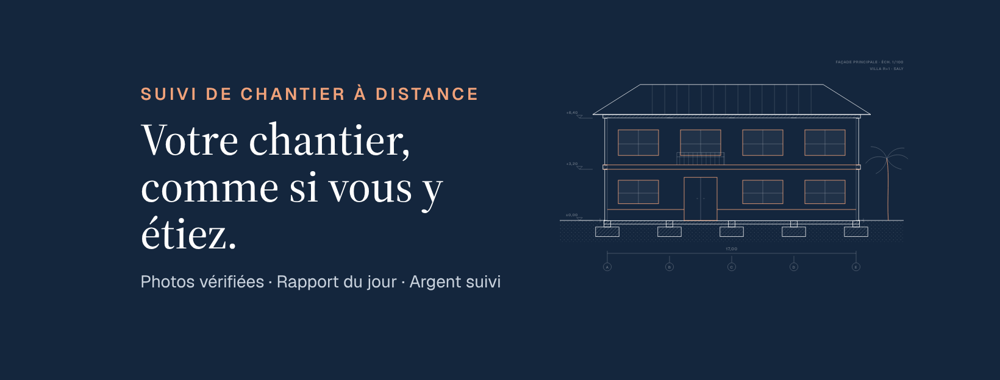<figcaption><b>couverture-facebook.png</b>1640 × 624. Le texte reste lisible quand Facebook coupe les côtés sur téléphone.</figcaption></figure>
    <figure class="wide">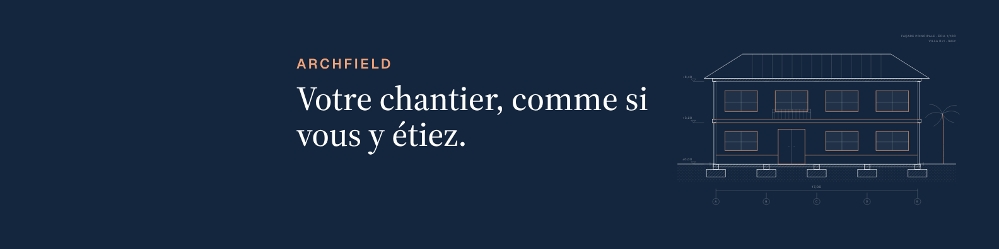<figcaption><b>banniere-linkedin.png</b>1584 × 396, la place du logo à gauche est laissée libre.</figcaption></figure>
    <figure>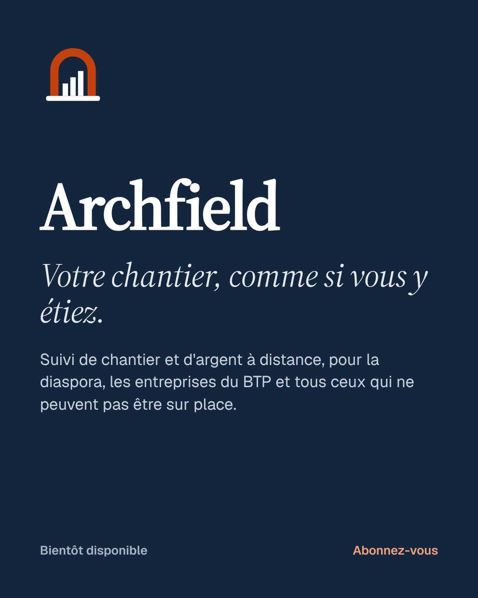<figcaption><b>post-01-marque</b>Présentation</figcaption></figure>
    <figure>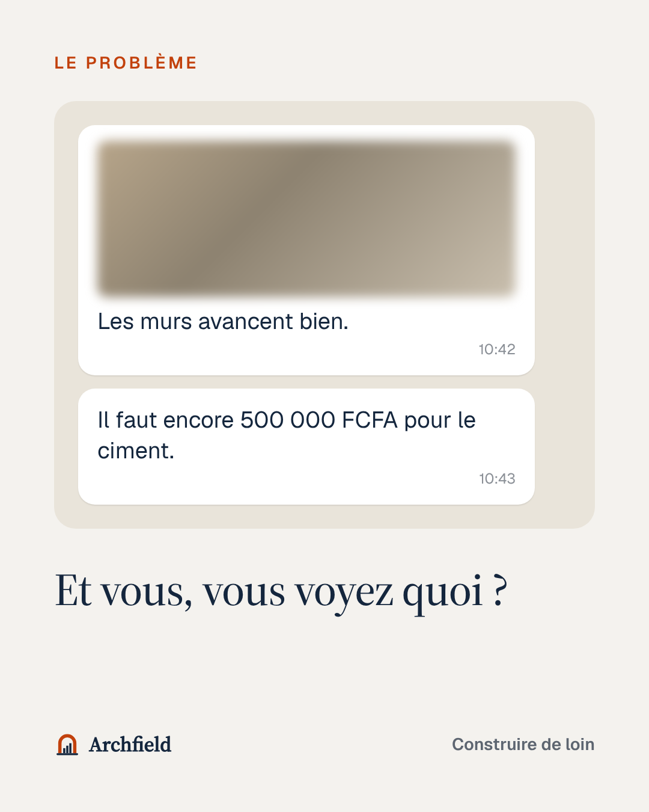<figcaption><b>post-02-probleme</b>Le problème</figcaption></figure>
    <figure>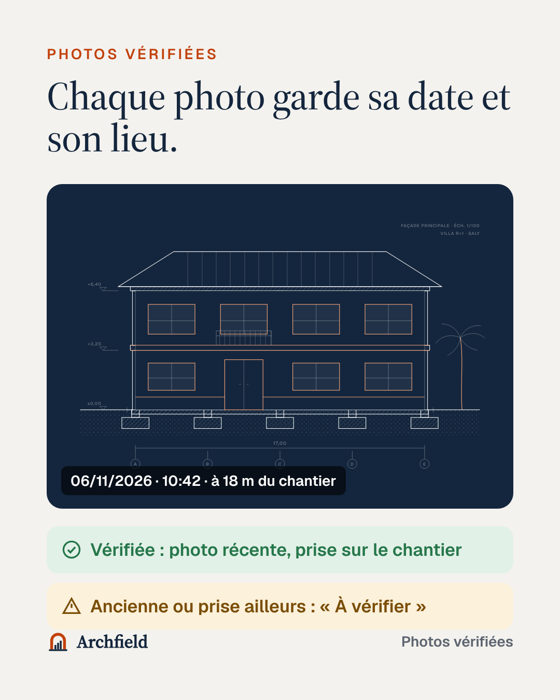<figcaption><b>post-03-photos</b>Photos vérifiées</figcaption></figure>
    <figure>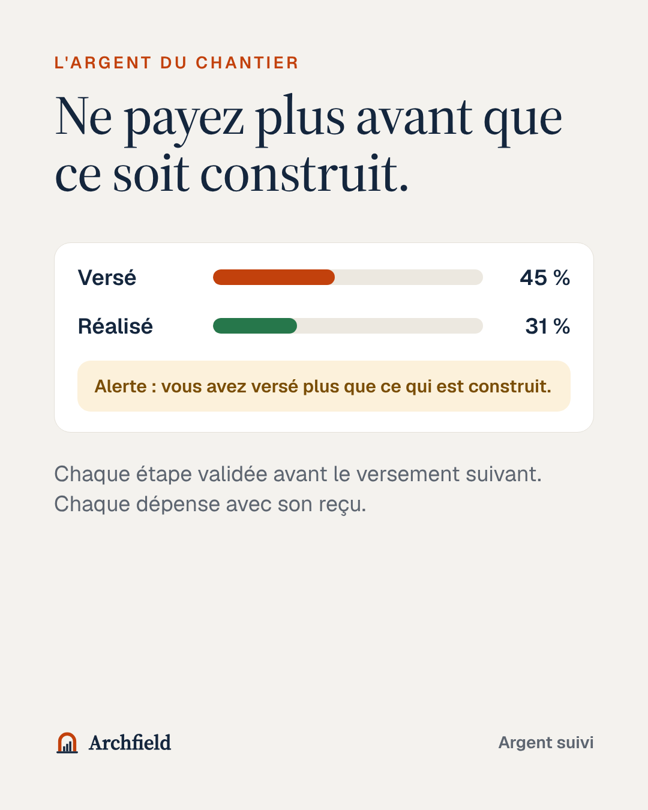<figcaption><b>post-04-argent</b>L'argent</figcaption></figure>
    <figure>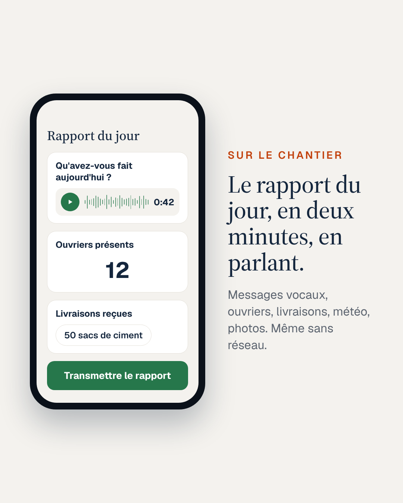<figcaption><b>post-05-rapport</b>Rapport du jour</figcaption></figure>
    <figure>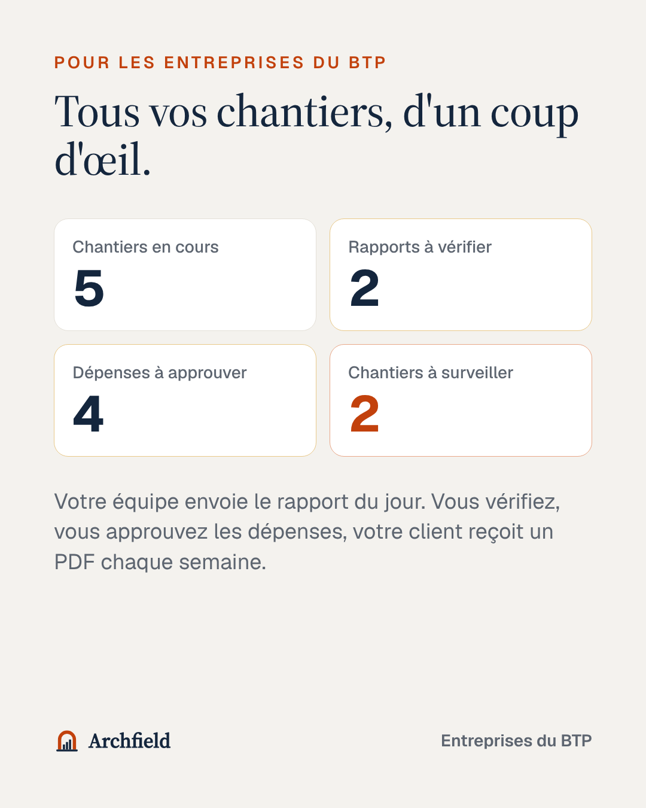<figcaption><b>post-06-dirigeant</b>Entreprises du BTP</figcaption></figure>
    <figure>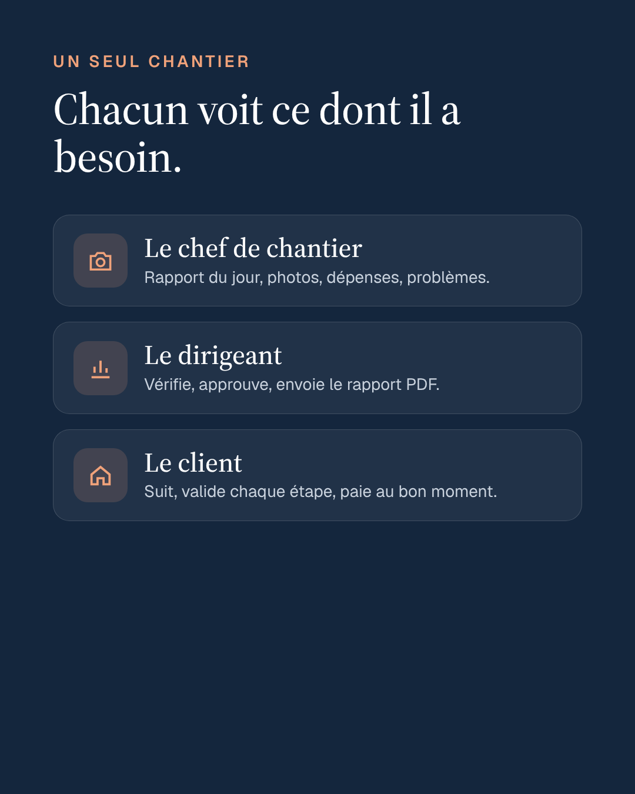<figcaption><b>post-07-trois</b>Trois espaces</figcaption></figure>
    <figure>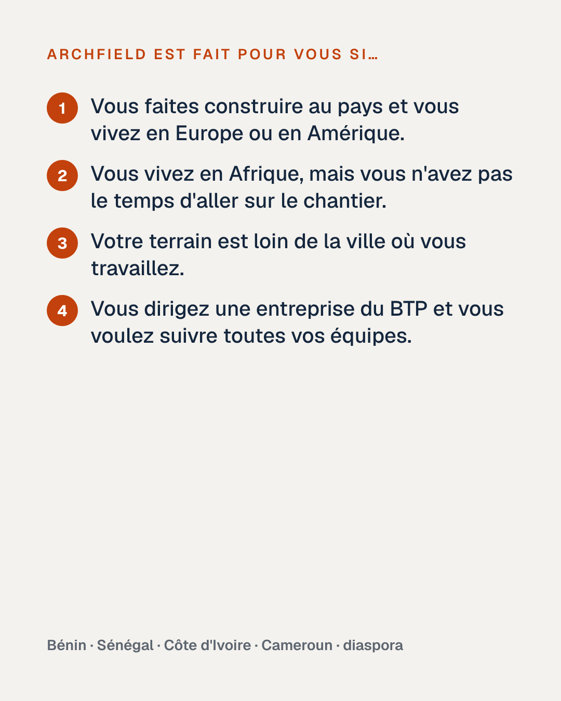<figcaption><b>post-08-pour-qui</b>Pour qui</figcaption></figure>
    <figure><figcaption><b>post-09-lancement</b>Liste d'attente</figcaption></figure>
    <figure>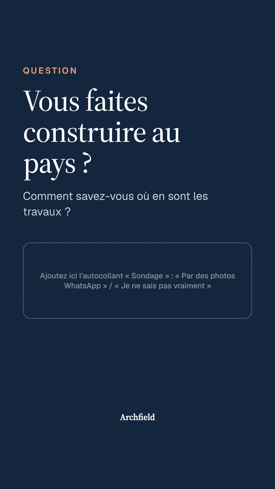<figcaption><b>story-01-sondage</b>Ajoutez l'autocollant Sondage dans le cadre.</figcaption></figure>
    <figure>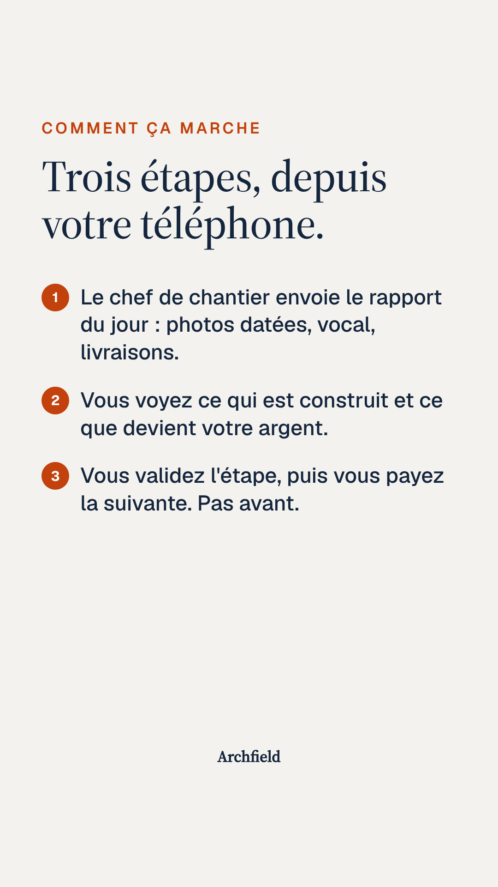<figcaption><b>story-02-comment</b>À mettre « À la une ».</figcaption></figure>
    <figure>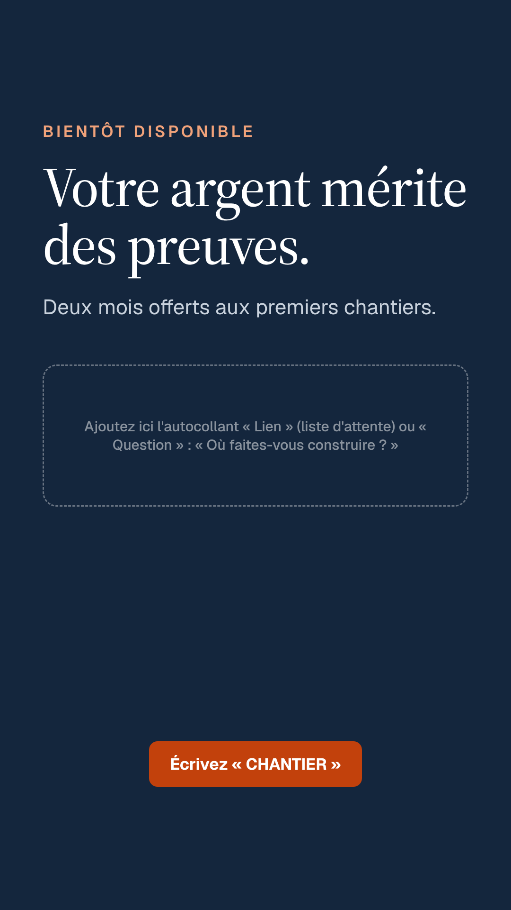<figcaption><b>story-03-liste</b>Ajoutez l'autocollant Lien (liste d'attente).</figcaption></figure>
  </div>
  <div class="note ok"><b>La meilleure image reste une vraie photo.</b> Dès que vous avez des photos de chantiers (les vôtres, ou celles d'une entreprise d'accord par écrit), publiez-les : une vraie dalle coulée à Calavi vaut mieux que n'importe quel dessin. Floutez les visages et les plaques d'immatriculation.</div>
</div></section>

<section class="part" id="videos"><div class="wrap">
  <h2><span class="num">5.</span>Les vidéos</h2>
  <div class="videos">
    <figure style="margin:0;display:grid;gap:6px"><video controls preload="metadata" src="videos/archfield-presentation.mp4" poster="images/post-01-marque.png"></video><figcaption class="muted" style="font-size:.84rem"><b>archfield-presentation.mp4</b> · 1920 × 1080, 1 min 17 s, voix off. YouTube, Facebook, LinkedIn, présentation. Ajoutez le fichier de sous-titres <code>archfield-presentation.fr.srt</code> à la mise en ligne.</figcaption></figure>
    <figure style="margin:0;display:grid;gap:6px"><video controls preload="metadata" src="videos/archfield-presentation-vertical.mp4"></video><figcaption class="muted" style="font-size:.84rem"><b>…-vertical.mp4</b> · 1080 × 1920, sous-titres incrustés. TikTok, Reels, Shorts, statut WhatsApp (à couper en morceaux de 60 s).</figcaption></figure>
  </div>
  <p class="muted">Musique : sur TikTok et Instagram, un compte professionnel ne peut utiliser que la <b>bibliothèque de sons commerciaux</b> de la plateforme. Gardez-la basse sous la voix.</p>
</div></section>

<section class="part" id="calendrier"><div class="wrap">
  <h2><span class="num">6.</span>Les 4 premières semaines</h2>
  <p>Rythme tenable à deux : <b>3 publications par semaine</b> sur Instagram et Facebook (les mêmes), <b>2 à 3 vidéos</b> sur TikTok et en Reels, et des stories quand il se passe quelque chose. Mieux vaut régulier que beaucoup.</p>
  <div class="tbl"><table>
    <thead><tr><th>Quand</th><th>Instagram et Facebook</th><th>TikTok et Reels</th><th>Stories et WhatsApp</th></tr></thead>
    <tbody>
      <tr><td class="w">Semaine 1<br><span class="tag">Présenter</span></td><td>Lun : post 1 (marque) · Mer : post 2 (problème) · Ven : post 8 (pour qui)</td><td>Vidéo verticale · Script A (« POV »)</td><td>Story sondage · Message aux contacts WhatsApp</td></tr>
      <tr><td class="w">Semaine 2<br><span class="tag">Expliquer</span></td><td>Lun : post 3 (photos) · Mer : post 5 (rapport du jour) · Ven : post 4 (argent)</td><td>Script B (3 questions avant d'envoyer de l'argent) · Script E (démo)</td><td>Story « comment ça marche » · Boîte à questions</td></tr>
      <tr><td class="w">Semaine 3<br><span class="tag">Entreprises</span></td><td>Lun : post 6 (dirigeant) · Mer : post 7 (trois espaces) · Ven : vraie photo de chantier</td><td>Script D (Jean-Baptiste sur un chantier) · Script C (les étapes d'une maison)</td><td>Partage LinkedIn de Jean-Baptiste · Groupes BTP</td></tr>
      <tr><td class="w">Semaine 4<br><span class="tag">Inviter</span></td><td>Lun : post 9 (liste d'attente) · Mer : coulisses (vous deux, le projet) · Ven : réponses aux questions reçues</td><td>Script F (WhatsApp contre Archfield) · Réponse en vidéo à un commentaire</td><td>Story liste d'attente · Relance personnelle des inscrits</td></tr>
    </tbody>
  </table></div>
  <p class="muted">Heures conseillées : le soir (19 h – 21 h, heure de Cotonou et de Paris, presque la même) et le dimanche. Regardez ensuite les statistiques de vos comptes pour ajuster.</p>
</div></section>

<section class="part" id="legendes"><div class="wrap">
  <h2><span class="num">7.</span>Légendes prêtes à copier</h2>
  <div class="copy"><header><b>Post 1 · La marque</b><button type="button" data-copy>Copier</button></header><pre>Votre chantier, comme si vous y étiez. 🏗️

Archfield, c'est le suivi de chantier et d'argent à distance. Le chef de chantier envoie son rapport chaque jour, chaque photo garde sa date et son lieu, et vous voyez ce que devient votre argent.

Pour la diaspora qui construit au pays, pour ceux qui n'ont pas le temps d'aller sur le chantier, et pour les entreprises du BTP.

Bientôt disponible. Abonnez-vous pour suivre le lancement 👇</pre></div>
  <div class="copy"><header><b>Post 2 · Le problème</b><button type="button" data-copy>Copier</button></header><pre>« Les murs avancent bien. »
« Il faut encore 500 000 FCFA pour le ciment. »

Si vous faites construire de loin, vous connaissez ces messages. Une photo floue, une demande d'argent… et aucun moyen de savoir ce qui est vraiment construit.

C'est pour ça qu'on crée Archfield. 👇 Et vous, comment suivez-vous votre chantier aujourd'hui ? Dites-le-nous en commentaire.</pre></div>
  <div class="copy"><header><b>Post 3 · Photos vérifiées</b><button type="button" data-copy>Copier</button></header><pre>Chaque photo garde sa date et son lieu. 📸

Quand votre chef de chantier publie, Archfield lit la date de prise de vue et la compare à la position du chantier.
✅ Photo récente, prise sur place : « Vérifiée »
⚠️ Photo ancienne ou prise ailleurs : « À vérifier »

Plus de photo de l'an dernier présentée comme celle d'hier.</pre></div>
  <div class="copy"><header><b>Post 4 · L'argent</b><button type="button" data-copy>Copier</button></header><pre>Ne payez plus avant que ce soit construit. 💸

Archfield compare ce que vous avez versé à ce qui est réellement construit, étape par étape. Si vous avez payé trop tôt, vous êtes alerté.

Chaque étape est validée par vous avant le versement suivant. Chaque dépense arrive avec la photo de son reçu.

(Écran d'illustration, données d'exemple.)</pre></div>
  <div class="copy"><header><b>Post 5 · Le rapport du jour</b><button type="button" data-copy>Copier</button></header><pre>Le rapport du jour en deux minutes. En parlant. 🎙️

Sur le chantier, pas toujours le temps d'écrire. Avec Archfield, le chef de chantier dit ce qui a été fait en message vocal, compte les ouvriers présents, note les livraisons (« 50 sacs de ciment »), la météo, et prend ses photos.

Pas de réseau ? Le rapport attend sur le téléphone et part tout seul dès que le réseau revient.</pre></div>
  <div class="copy"><header><b>Post 6 · Entreprises du BTP</b><button type="button" data-copy>Copier</button></header><pre>Dirigeants du BTP : tous vos chantiers, d'un coup d'œil. 🏗️

Chaque matin, Archfield vous montre ce qui demande une action : les rapports à vérifier, les dépenses à approuver, les chantiers en retard ou dont le budget avance plus vite que les travaux.

Votre équipe a ses droits, chantier par chantier. Vos clients reçoivent un rapport PDF chaque semaine.

Vous dirigez une entreprise au Bénin ou ailleurs en Afrique de l'Ouest ? Écrivez-nous « CHANTIER » : nous cherchons quelques entreprises pour tester avec nous.</pre></div>
  <div class="copy"><header><b>Post 7 · Trois espaces</b><button type="button" data-copy>Copier</button></header><pre>Un seul chantier. Chacun voit ce dont il a besoin.

👷 Le chef de chantier : rapport du jour, photos, dépenses, problèmes.
📊 Le dirigeant : vérifie, approuve, envoie le rapport PDF.
🏠 Le client : suit, valide chaque étape, paie au bon moment.

Ce que le responsable n'autorise pas n'apparaît même pas à l'écran.</pre></div>
  <div class="copy"><header><b>Post 8 · Pour qui</b><button type="button" data-copy>Copier</button></header><pre>Archfield est fait pour vous si…
1️⃣ vous faites construire au pays et vous vivez en Europe ou en Amérique ;
2️⃣ vous vivez en Afrique mais n'avez pas le temps d'aller sur le chantier ;
3️⃣ votre terrain est loin de la ville où vous travaillez ;
4️⃣ vous dirigez une entreprise du BTP et voulez suivre toutes vos équipes.

Vous vous reconnaissez ? Dites-nous en commentaire où se trouve votre chantier 👇</pre></div>
  <div class="copy"><header><b>Post 9 · Liste d'attente</b><button type="button" data-copy>Copier</button></header><pre>Soyez parmi les premiers. 🚀

Nous ouvrons bientôt Archfield à quelques chantiers pour le tester avec nous, au Bénin et dans la diaspora. Les premiers inscrits ont deux mois offerts, sans carte bancaire.

👉 Inscrivez-vous avec le lien dans la bio, ou écrivez « CHANTIER » en message privé ou sur WhatsApp.</pre></div>
  <div class="copy"><header><b>Vidéo de présentation (YouTube, Facebook, Reels, TikTok)</b><button type="button" data-copy>Copier</button></header><pre>Construire au pays, de loin… sans savoir ce qui est vraiment construit ? 🏗️

Archfield : le rapport du jour du chef de chantier, des photos datées et localisées, et votre argent suivi étape par étape.

Bientôt disponible. Écrivez « CHANTIER » pour faire partie des premiers.</pre></div>
  <h3>Hashtags</h3>
  <p class="muted">5 à 10 par publication, en mélangeant les groupes. Sur TikTok, 3 à 5 suffisent.</p>
  <div class="grid2">
    <div class="copy"><header><b>Diaspora</b><button type="button" data-copy>Copier</button></header><pre>#diaspora #diasporaafricaine #construireaupays #maisonaupays #benin #cotonou #senegal #cotedivoire #cameroun #afrique</pre></div>
    <div class="copy"><header><b>BTP et construction</b><button type="button" data-copy>Copier</button></header><pre>#btp #construction #chantier #suividechantier #geniecivil #batiment #maconnerie #entrepreneurbtp #btpafrique #immobilier</pre></div>
    <div class="copy"><header><b>Marque</b><button type="button" data-copy>Copier</button></header><pre>#archfield #votrechantier #photosverifiees</pre></div>
    <div class="copy"><header><b>TikTok</b><button type="button" data-copy>Copier</button></header><pre>#chantier #diaspora #construction #benin #btp</pre></div>
  </div>
  <h3>Message à vos contacts WhatsApp</h3>
  <div class="copy"><header><b>À envoyer un par un (pas en liste de diffusion)</b><button type="button" data-copy>Copier</button></header><pre>Salut [prénom] 👋
Avec Jean-Baptiste, on lance bientôt *Archfield*, une appli pour suivre un chantier à distance 🏗️

👉 Le chef de chantier envoie chaque jour un rapport (même en vocal, même sans réseau)
👉 Chaque photo garde sa date et son lieu : on voit ce qui est vraiment construit
👉 Le client valide chaque étape avant de payer la suivante

Tu fais construire, ou tu connais quelqu'un qui construit au pays ? Ça m'aiderait beaucoup d'avoir ton avis en 10 minutes, et les premiers ont deux mois offerts 🙏</pre></div>
</div></section>

<section class="part" id="tiktok"><div class="wrap">
  <h2><span class="num">8.</span>Vidéos à tourner soi-même</h2>
  <p>Ce sont elles qui marchent le mieux sur TikTok et en Reels : un visage, une vraie voix, 20 à 45 secondes, filmé au téléphone en vertical. <b>Les 2 premières secondes décident de tout</b> : on commence par la phrase d'accroche, sans « Bonjour, je m'appelle… ». Texte à l'écran en grand, sous-titres automatiques activés.</p>
  <div class="tbl"><table>
    <thead><tr><th>Script</th><th>Accroche (0–2 s)</th><th>Déroulé</th><th>Fin</th></tr></thead>
    <tbody>
      <tr><td class="w">A · POV</td><td>Texte à l'écran : « POV : tu construis au pays depuis Paris »</td><td>Vous, l'air inquiet, vous recevez « Les murs avancent bien » + une photo floue, puis « Envoie encore 500 000 ». Coupe : l'écran Archfield avec la photo « Vérifiée ».</td><td>« Bientôt : Archfield. »</td></tr>
      <tr><td class="w">B · Conseils</td><td>« 3 questions à poser avant d'envoyer de l'argent pour votre chantier »</td><td>1. Quelle étape est terminée, avec photos datées ? 2. Où sont les reçus des achats ? 3. Ce que j'ai déjà versé correspond-il à ce qui est construit ?</td><td>« Archfield répond aux trois, tout seul. Abonnez-vous. »</td></tr>
      <tr><td class="w">C · Les étapes</td><td>« Une maison, du terrain à la toiture, en 30 secondes »</td><td>Le plan de façade qui se construit (vidéo de présentation, scène 3) avec, en voix, les étapes : implantation, fondations, soubassement, élévation, dalle, toiture, finitions.</td><td>« À chaque étape, vous validez avant de payer la suivante. »</td></tr>
      <tr><td class="w">D · L'ingénieur</td><td>Jean-Baptiste sur un chantier : « Je suis élève ingénieur en génie civil. Voici ce que je regarde en premier sur une fondation. »</td><td>Un conseil concret, montré sur place (avec l'accord de l'entreprise).</td><td>« Et si vous n'êtes pas là pour le voir, c'est pour ça qu'on crée Archfield. »</td></tr>
      <tr><td class="w">E · Démo</td><td>« Le rapport du jour en 2 minutes, chrono en main »</td><td>Enregistrement d'écran du téléphone sur la version de test : vocal, ouvriers, livraison, photo, « Transmettre ». Un chronomètre dans un coin.</td><td>« Même sans réseau. »</td></tr>
      <tr><td class="w">F · Comparaison</td><td>Écran coupé en deux : « Ce qu'on reçoit sur WhatsApp / ce qu'on devrait recevoir »</td><td>À gauche, photo floue sans date ; à droite, rapport Archfield : date, lieu, ouvriers, livraisons, « Vérifiée ».</td><td>« Lequel préférez-vous ? Commentez. »</td></tr>
    </tbody>
  </table></div>
  <div class="note warn"><b>Sur un vrai chantier :</b> demandez l'accord de l'entreprise et des personnes filmées, floutez les visages qui le demandent, ne montrez ni adresse exacte ni plaque d'immatriculation.</div>
</div></section>

<section class="part" id="reponses"><div class="wrap">
  <h2><span class="num">9.</span>Réponses aux messages</h2>
  <p>À enregistrer en <b>réponses rapides</b> dans WhatsApp Business (et dans la messagerie Instagram et Facebook). Raccourci entre crochets.</p>
  <div class="copy"><header><b>Message d'accueil</b><button type="button" data-copy>Copier</button></header><pre>Bonjour et merci de votre message 🙏 Ici l'équipe Archfield, le suivi de chantier à distance. Archfield ouvre bientôt : dites-nous si vous faites construire, si vous dirigez une entreprise du BTP, et où se trouve votre chantier. Nous vous répondons rapidement.</pre></div>
  <div class="copy"><header><b>Message d'absence</b><button type="button" data-copy>Copier</button></header><pre>Merci pour votre message ! Nous sommes absents pour le moment et vous répondons dès demain. Pour rejoindre la liste d'attente (deux mois offerts) : [lien du formulaire]</pre></div>
  <div class="grid2">
    <div class="copy"><header><b>[/quoi] C'est quoi ?</b><button type="button" data-copy>Copier</button></header><pre>Archfield permet de suivre un chantier à distance. Le chef de chantier envoie un rapport chaque jour (même en vocal, même sans réseau), chaque photo garde sa date et son lieu, et vous voyez ce que devient votre argent, étape par étape.</pre></div>
    <div class="copy"><header><b>[/quand] C'est disponible quand ?</b><button type="button" data-copy>Copier</button></header><pre>Nous ouvrons d'abord à quelques chantiers pilotes, au Bénin et dans la diaspora, puis à tout le monde. Inscrivez-vous ici pour être prévenu et avoir deux mois offerts : [lien]</pre></div>
    <div class="copy"><header><b>[/prix] Combien ça coûte ?</b><button type="button" data-copy>Copier</button></header><pre>Suivre un chantier est gratuit. L'offre Plus, avec le suivi de l'argent, est prévue autour de 10 € ou 10 $ par mois, et les offres entreprise à partir de 15 € ou 17 $. Les prix seront confirmés à l'ouverture, et les premiers ont deux mois offerts.</pre></div>
    <div class="copy"><header><b>[/entreprise] Mon entreprise doit accepter ?</b><button type="button" data-copy>Copier</button></header><pre>Votre entreprise (ou un proche sur place) reçoit un lien d'invitation et publie depuis son téléphone. Pour une entreprise à qui vous confiez votre chantier, c'est gratuit. Si elle ne veut pas, un proche ou un chef de chantier que vous connaissez peut publier à sa place.</pre></div>
    <div class="copy"><header><b>[/telephone] Pas de smartphone ?</b><button type="button" data-copy>Copier</button></header><pre>Il faut un smartphone Android ou iPhone, même ancien, avec un appareil photo. Pas besoin de bon réseau : le rapport attend sur le téléphone et part dès que le réseau revient. Et pas besoin d'écrire : tout peut se dire en message vocal.</pre></div>
    <div class="copy"><header><b>[/securite] Mes données ?</b><button type="button" data-copy>Copier</button></header><pre>Les photos et les montants ne sont visibles que par les personnes du chantier. Rien n'est public, rien n'est vendu, et vous pouvez télécharger ou supprimer toutes vos données à tout moment.</pre></div>
    <div class="copy"><header><b>[/pays] Quels pays ?</b><button type="button" data-copy>Copier</button></header><pre>Archfield marche partout où il y a un téléphone. Nous commençons au Bénin, puis au Sénégal, en Côte d'Ivoire, au Cameroun et dans le reste de l'Afrique de l'Ouest et centrale, avec la diaspora en Europe et en Amérique. Les montants sont en FCFA ou en euros.</pre></div>
    <div class="copy"><header><b>[/entretien] Demander 10 minutes</b><button type="button" data-copy>Copier</button></header><pre>Merci pour votre intérêt ! Avant l'ouverture, nous parlons avec quelques personnes pour construire Archfield avec elles. Auriez-vous 10 minutes cette semaine, par appel WhatsApp ? Vous nous direz comment vous suivez votre chantier aujourd'hui. En remerciement, vous aurez deux mois offerts.</pre></div>
  </div>
</div></section>

<section class="part" id="premiers"><div class="wrap">
  <h2><span class="num">10.</span>Trouver les premiers utilisateurs</h2>
  <p>Les 50 premiers viennent rarement des réseaux sociaux : ils viennent de vos contacts, un par un. Les réseaux servent à être crédibles quand ils vous cherchent.</p>
  <ol class="steps">
    <li><b>Vos contacts</b><span>Le message WhatsApp ci-dessus, envoyé personnellement à 30 personnes : famille, amis qui construisent, collègues de la diaspora.</span></li>
    <li><b>Le réseau de Jean-Baptiste</b><span>Les entreprises du BTP rencontrées en stage (BECI BTP), les camarades de promotion, les enseignants. Objectif : 3 entreprises pilotes au Bénin.</span></li>
    <li><b>Les groupes Facebook et WhatsApp de la diaspora</b><span>Associations de ressortissants, groupes « construire au pays ». <b>Lisez le règlement, demandez à l'administrateur</b> avant de publier, et apportez de la valeur (le script B en texte) plutôt qu'une publicité.</span></li>
    <li><b>Les métiers autour du chantier</b><span>Architectes, géomètres, notaires, vendeurs de terrains, quincailleries : ils voient passer des gens qui font construire. Proposez-leur de recommander Archfield.</span></li>
    <li><b>Les entretiens</b><span>Chaque personne intéressée reçoit la réponse [/entretien]. C'est aussi le plan de validation de SuiviBat : 10 entretiens avant le 29 novembre.</span></li>
  </ol>
</div></section>

<section class="part" id="pub"><div class="wrap">
  <h2><span class="num">11.</span>La publicité payante</h2>
  <div class="note warn"><b>Pas tout de suite.</b> Commencez après 2 à 3 semaines de publications, quand la liste d'attente et les réponses rapides sont prêtes. Sinon, on paie pour des visiteurs qui tombent sur un compte vide.</div>
  <h3>Premier test sur Meta (Instagram et Facebook)</h3>
  <div class="tbl"><table>
    <thead><tr><th>Réglage</th><th>Choix</th></tr></thead>
    <tbody>
      <tr><td class="w">Où</td><td>Gestionnaire de publicités Meta (pas le bouton « Booster »). Moyen de paiement : carte bancaire.</td></tr>
      <tr><td class="w">Objectif</td><td>« Interactions » › conversations <b>WhatsApp</b> (les gens écrivent « CHANTIER »), ou « Prospects » avec un formulaire Meta.</td></tr>
      <tr><td class="w">Budget</td><td><b>5 € (environ 3 300 FCFA) par jour pendant 7 jours</b> par audience, soit 35 € pour apprendre. On garde ce qui coûte le moins cher par conversation.</td></tr>
      <tr><td class="w">Audience 1 : diaspora</td><td>France, Belgique, Suisse, Canada · 28–60 ans · centres d'intérêt liés au Bénin, à la Côte d'Ivoire, au Sénégal, au Cameroun, et à la construction ou l'immobilier · comportement « Expatriés » s'il est proposé.</td></tr>
      <tr><td class="w">Audience 2 : Afrique</td><td>Cotonou, Abomey-Calavi, Porto-Novo (puis Abidjan, Dakar, Douala) · 30–60 ans · centres d'intérêt construction, immobilier, entrepreneuriat.</td></tr>
      <tr><td class="w">Audience 3 : entreprises</td><td>Bénin · centres d'intérêt BTP, génie civil, architecture, chefs d'entreprise. Visuel : post 6.</td></tr>
      <tr><td class="w">Visuels</td><td>Vidéo verticale (Reels et Stories), post 2 (problème), post 4 (argent). Un message par publicité.</td></tr>
    </tbody>
  </table></div>
  <ul class="plain">
    <li>Meta classe certaines publicités en « catégorie spéciale » (logement, crédit, emploi). Ce ne devrait pas être le cas pour une application de suivi de chantier, mais si Meta le demande, acceptez : le ciblage sera seulement plus large.</li>
    <li>Pas de promesse que le produit ne tient pas encore (« utilisé par… », « économisez X % »). Restez sur « Bientôt disponible » et ce que fait vraiment l'application.</li>
    <li>TikTok Ads demande un budget minimum plus élevé : à garder pour après le lancement, quand une vidéo aura bien marché sans publicité.</li>
  </ul>
</div></section>

<section class="part" id="suivi"><div class="wrap">
  <h2><span class="num">12.</span>Suivre les résultats</h2>
  <p>Une fois par semaine (le dimanche soir), notez ces chiffres dans un tableau partagé (Google Sheets). Les objectifs sont des repères pour un premier mois, pas des promesses.</p>
  <div class="tbl"><table>
    <thead><tr><th>Indicateur</th><th>Où le trouver</th><th>Repère sur 4 semaines</th></tr></thead>
    <tbody>
      <tr><td class="w">Inscrits sur la liste d'attente</td><td>Tally ou Google Forms</td><td>30 à 50, dont au moins 10 entreprises ou chefs de chantier</td></tr>
      <tr><td class="w">Conversations « CHANTIER »</td><td>WhatsApp Business (étiquette)</td><td>20 à 40</td></tr>
      <tr><td class="w">Entretiens faits</td><td>Vos notes</td><td>10 (plan de validation, avant le 29 novembre)</td></tr>
      <tr><td class="w">Chantiers pilotes trouvés</td><td>Vos notes</td><td>3 entreprises au Bénin, 5 clients de la diaspora</td></tr>
      <tr><td class="w">Abonnés et portée</td><td>Statistiques Instagram, Facebook, TikTok</td><td>Secondaire au début : on regarde surtout ce qui fait écrire les gens</td></tr>
      <tr><td class="w">Coût par conversation</td><td>Gestionnaire de publicités</td><td>À mesurer pendant le premier test ; on garde l'audience la moins chère</td></tr>
    </tbody>
  </table></div>
</div></section>

<section class="part" id="regles"><div class="wrap">
  <h2><span class="num">13.</span>Les règles à respecter</h2>
  <ul class="plain">
    <li><b>Pas de faux avis ni de faux témoignages.</b> Les premiers vrais retours viendront du pilote ; publiez-les avec l'accord écrit des personnes.</li>
    <li><b>Les captures sont des illustrations</b> avec des données d'exemple : dites-le quand il y a un doute (« écran d'illustration »).</li>
    <li><b>Photos et vidéos de chantier</b> : seulement avec l'accord du propriétaire, de l'entreprise et des personnes filmées.</li>
    <li><b>Données de la liste d'attente</b> : la case d'accord dans le formulaire, aucune revente, suppression sur simple demande. En France, c'est le RGPD ; au Bénin, la loi sur les données personnelles et l'APDP ; au Sénégal, la CDP ; en Côte d'Ivoire, l'ARTCI.</li>
    <li><b>Messages WhatsApp</b> : pas d'ajout dans des groupes sans accord, pas d'envoi en masse à des inconnus, sinon WhatsApp bloque le numéro.</li>
    <li><b>Musique</b> : bibliothèque de sons commerciaux de TikTok et d'Instagram, ou musique libre de droits.</li>
    <li><b>Le nom</b> : avant d'imprimer quoi que ce soit (cartes, bâches), vérifiez la marque à l'INPI (France) et à l'OAPI (Afrique francophone), et tranchez Archfield ou SuiviBat.</li>
  </ul>
</div></section>

<footer><div class="wrap">Kit de lancement Archfield · 6 novembre 2026. Fichiers sources : <code>marketing/kit/</code> et <code>marketing/video/</code> du projet. Les écrans montrés sont des illustrations avec des données d'exemple.</div></footer>

<script>
// Boutons « Copier » : le texte du bloc, avec repli si le presse-papiers est refusé.
document.addEventListener("click", async (e) => {
  const b = e.target.closest("[data-copy]");
  if (!b) return;
  const pre = b.closest(".copy").querySelector("pre");
  const text = pre.innerText;
  let ok = false;
  try { await navigator.clipboard.writeText(text); ok = true; } catch (err) {
    try { const r = document.createRange(); r.selectNodeContents(pre); const s = getSelection(); s.removeAllRanges(); s.addRange(r); ok = document.execCommand("copy"); } catch (x) {}
  }
  b.textContent = ok ? "Copié" : "Sélectionné : Ctrl+C";
  b.classList.toggle("done", ok);
  setTimeout(() => { b.textContent = "Copier"; b.classList.remove("done"); }, 2200);
});
</script>
